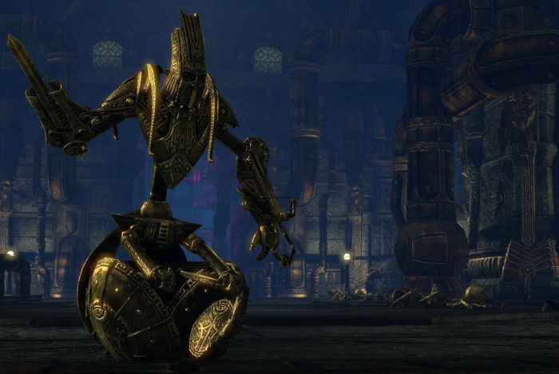

Les races de Bordeciel sont toutes aussi diverses et variées que ses provinces. Chacune dispose de ses croyances et ses cultures. Toutefois, il est possible de regrouper les peuples en trois catégories selon leurs ancêtres communs, pour les Humains et les Elfes, et leurs particularités, pour le « peuple Animal ».
Breton, Nordique, Bosmer, Argonien, Rougegarde, Altmer, Khajiit, Orsimer, Dunmer
Les Humains
Les Humains sont une des races mortelles de Tamriel. Elle regroupe les Impérieux, les Nordiques et les Rougegardes. Mais aussi à moitié les Bretons.
Les Bretons sont un croisement entre les Humains et les Elfes issues de la colonisation des Altmers de Hauteroche. Toutefois, le seul point commun entre les bretons et les elfes sont l’espérance de vie plus longue que celle des Humains et la facilité avec laquelle ils peuvent utiliser la magie.
Les Bretons, sinon, ont une morphologie très proche de leurs cousins humains et sont donc considérés tout comme. Ils sont aussi intelligents, passionnés et excentriques par leur intérêt pour la magie et la science. De nombreux sorciers de l’histoire sont des Bretons originaires de Hauteroche.
Les impériaux sont le peuple humain qui vit dans la province de Cyrodill. C’est un peuple conquérant et entreprenant qui cherche à dominer le reste du continent en fondant l’Empire de Cyrodill.
Les Nordiques, ou Nords, sont les habitants de Bordeciel. Ce sont des guerriers enthousiastes et fiers, capables d’agir en temps que soldats, mercenaires ou encore forgerons. Avec la volonté de s’améliorer encore et encore, ils participent à toutes sortes de guerres.
Pour les décrire, on peut dire d’eux qu’ils sont grands, blonds, agressifs et sans peurs, laborieux et entreprenant sans oublier qu’ils ont un fort attablement à l’honneur, la gloire et la famille.
Les Rougegardes, habitants de Martelfell, sont des individus fiers et indépendants. L’indépendance est d’ailleurs une vertu cardinale, comme la bravoure et l’honneur. Ce qui fait que les Rougegardes sont des excellents mercenaires et aventuriers, et pas des soldats que l’on peut soumettre à une autorité facilement. Ce sont aussi des personnes franches, qui n’apprécient pas l’hypocrisie.
Ils ont la peau bronzée, ce qui est peu étonnant étant donné qu’ils vivent dans une région désertique et aride. Leurs cheveux sont sombres et drus. Ils ont aussi une musculature fort développée, avec les Orcimers et les Nordiques.
Bretons
Impériaux
Nordiques
Rougegardes
Les Elfes
Les Elfes sont l’autre groupe principal de races. Ils tirent leurs origines des Aldmers, que nous pouvons traduire par « Peuple Ancien ».
Les Elfes se considèrent comme une race pure, bien qu’elle soit divisée en de nombreuses catégories. Trois d’entre elles, les Haut-Elfes, les Elfes des Bois et les Elfes Noirs sont considérées comme races principales. Il existe aussi des races plus rares comme les Elfes des Neiges et les Elfes Tropicaux. D’autres ont disparus mais ont laissé une trace indélébile sur le monde comme les nains.
Les Altmers, qui veut littéralement dire « Haut Peuple », sont les habitants de l’Archipel de l’Automne. Ils sont réputés pour être d’excellents magiciens. Ils sont fiers, voire même arrogants. Ils se considèrent plus facilement comme supérieurs aux autres races. Ils sont aussi les initiateurs des sciences modernes et les plus à l’aise avec ce domaine.
Les Haut-Elfes sont les habitants de Tamriel les plus grands en termes de taille, si bien qu’il serait logique de penser que le « Alt » de leur nom fasse référence à ce fait. Ou cela peut aussi faire référence à leur très grande estime de soi. Outre cela, ils disposent d’une constitution fine. Cela accentue leur côté « raffiné ».
Il est important de noter que, contrairement à une croyance populaire, les autres races d’elfes ne descendent pas des Altmers. Ce sont des races cousines.
Les Bosmers, qui veut littéralement dire « Peuple des Bois », sont les habitants principaux de Val-Boisé. C’est un peuple énergique et à la vivacité sauvage qui ne désire que vivre dans la simplicité de la nature.
Ils sont en communion avec la terre et la nature, leurs beautés et leurs créatures. Ils sont plutôt curieux et agiles. Ils s’adaptent très bien à un environnement forestier. Ils sont aussi naturellement aptes en tant qu’éclaireurs, voleurs ou espions.
Dunmer signifie « Peuple Sombre » et fait autant référence à la couleur de leur peau qu’à leur caractère lugubre, ou leur infortune. Les Elfes Noirs sont les habitants de Morrowind.
Leurs yeux sont rougeoyants. Ils sont de tailles légèrement plus petites que la moyenne. Ils ont un intellect assez bien développé au point de pouvoir rivaliser avec leurs cousins Altmers. Ils sont forts et agiles. Ils sont aussi sombres, distants et réservés. Si bien qu’ils finissent très souvent par être assassins ou voleurs.
Les Dwemers, qui signifie « Peuple profonds », est un peuple d’Elfe qui vivaient dans les tréfonds des montagnes du Nord de Tamriel. Ils sont souvent appelés les nains. Pourtant, à aucun moment il est dit que les Dwemers étaient de petite taille.
De ce qu’on sait encore des nains à l’époque actuelle, ils étaient athées. Ils considéraient que se vouer corps et âme à un dieu était de la folie. Ils préféraient largement se vouer à la technologie. Il en reste d’ailleurs de nombreuses traces de la technologie Dwemer encore active dans leurs ruines.
Ils disparurent brutalement de la surface de Tamriel sans que l’on sache réellement pourquoi.
Les Falmers, ou « Peuple des Neiges », étaient des elfes qui vivaient auparavant dans les régions glaciales de Tamriel. Ils avaient la peau blanche comme la neige. On ne sait que très peu de chose sur eux, si ce n’est qu’ils étaient très portés sur la spiritualité, contrairement à leur cousins Dwemers.
Toutefois, ils n’ont pas disparu. Ils furent chassés par les Humains qui vinrent s’installer sur les terres de Bordeciel. Ils se retranchèrent dans les grottes et les profondeurs et ils évoluèrent pour ne finir par n’être que l’ombre d’eux-mêmes.
Les Maomers, ou « Peuple des Tropiques », sont des elfes en harmonie avec la nature, comme leurs cousins Bosmers. Ils ont la peau écaillée, capable de changer de couleur, un peu comme un caméléon. Ils sont donc capables d’êtres bien plus discret que les Elfes des Bois quand le besoin s’en fait sentir.
Ils préfèrent les zones tropicales et proches de la côte.
Les Orsimers, dit « Peuple Paria » ou encore Orques, sont un peuple à la peau verte. Ils sont connus pour leurs capacités de forgeron et leurs aptitudes aux combats. Il existe différents mythes qui tendent à expliquer leurs origines avec, souvent, bien des contradictions.
Leur culture est inspirée sur celui de Malacath. Autrement dit, chaque tribu dispose d’un mâle Alpha et seul lui peut se permettre de se reproduire avec les femelles. Les autres mâles eux, cherchent à obtenir sa place, ce qu’ils ne peuvent faire que dans un combat.
Altmers
Bosmers
Dunmers
Dwemers

Falmers
Maomers
Orsimers
Les Betmers
Les Betmers, ou Peuple Animal, est plus un regroupement éclectique d’espèces variées qui ne sont considérés ni comme elfes, ni comme humains. On y retrouve deux grandes races : les Argoniens et les Khajiits.
Les Argoniens sont un peuple reptilien qui vit dans le Marais Noir. Il s’agit d’un petit peuple réservé et peu confiant. Ils sont pourtant extrêmement loyaux et prêts à combattre pour des personnes qu’ils considèrent comme des véritables amis.
Comme ils sont apparentés aux reptiles, ils ont des caractéristiques communes aux amphibien. Ils sont capables de respirer sous l’eau et sont de parfaits nageurs. Ils sont aussi très résistants aux poisons et aux maladies. Raison pour laquelle ils sont parfaitement adaptés aux caractéristiques peu vivables du Marais Noir.
Les Khajiits sont des espèces d’hommes-félins qui vivent dans le Sud de Tamriel, principalement dans la province d’Elsweyr. Leur morphologie est dépendante des deux lunes de la planète si bien qu’il existe un nombre important de sous-races, toutes différenciées selon l’alignement des deux astres. Tous les Khajiits sont les mêmes à la naissance. C’est à partir de quelques semaines seulement que l’on peut deviner de quelle sous-race un Khajiit fait partie.
Etant en partie félins, ils sont vifs, sournois et agiles, si bien qu’ils font d’excellents voleurs. D’autres préfèrent se tourner vers le marchandage et le troc. Il arrive aussi que certains deviennent des guerriers. A noter toutefois que les Khajiits préfèrent se battre à mains nues, utilisant leurs griffes plutôt que des armes.
Argoniens
Khajiits